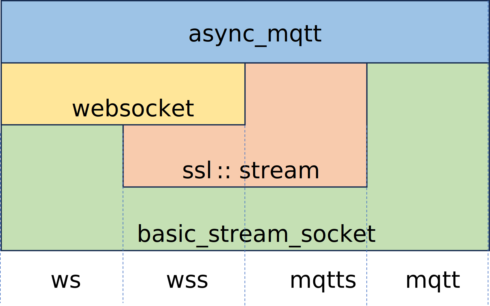

Create endpoint
First, choose the underlying layer.

Include header files
To use async_mqtt, include the following header file:
#include <async_mqtt/all.hpp>In addition, if you want to use TLS and/or WebSocket, include the following header files. They are not included in all.hpp.
For TLS:
#include <async_mqtt/asio_bind/predefined_layer/mqtts.hpp>For Websocket
#include <async_mqtt/asio_bind/predefined_layer/ws.hpp>For Websocket on TLS
#include <async_mqtt/asio_bind/predefined_layer/wss.hpp>The following namespace alias is defined in all code examples:
namespace as = boost::asio;
namespace tls = as::ssl;mqtt
as::io_context ioc;
// endpoint is client choose underlying layer
auto amep = am::endpoint<am::role::client, am::protocol::mqtt>{
am::protocol_version::v3_1_1, // choose MQTT version v3_1_1 or v5
ioc.get_executor() // args for underlying layer (mqtt)
// mqtt is as::basic_stream_socket<as::ip::tcp, as::io_context::executor_type>
};mqtts
as::io_context ioc;
am::tls::context ctx{am::tls::context::tlsv12};
ctx.set_verify_mode(am::tls::verify_none);
// If you want to check server certificate, set cacert as follows.
// ctx.load_verify_file(cacert);
auto amep = am::endpoint<am::role::client, am::protocol::mqtts>{
am::protocol_version::v5, // choose MQTT version v3_1_1 or v5
ioc.get_executor(), // args for underlying layer (as::ssl::stream<mqtt>)
ctx
};ws
as::io_context ioc;
auto amep = am::endpoint<am::role::client, am::protocol::ws>{
am::protocol_version::v3_1_1, // choose MQTT version v3_1_1 or v5
ioc.get_executor() // args for underlying layer (bs::websocket::stream<mqtt>)
};wss
as::io_context ioc;
am::tls::context ctx{am::tls::context::tlsv12};
ctx.set_verify_mode(am::tls::verify_none);
// If you want to check server certificate, set cacert as follows.
// ctx.load_verify_file(cacert);
auto amep = am::endpoint<am::role::client, am::protocol::wss>{
am::protocol_version::v3_1_1, // choose MQTT version v3_1_1 or v5
ioc.get_executor(), // args for underlying layer ( bs::websocket::stream<mqtts>)
ctx // mqtts is as::ssl::stream<mqtt>
};